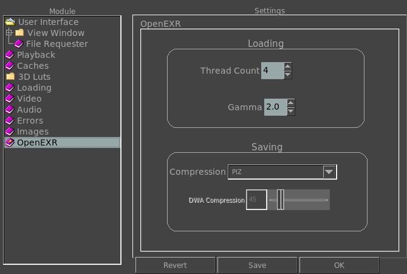

|  |
This option allows you to select how many threads are used for loading OpenEXR images. Depending on your CPUs and their load, more threads may mean faster loading. This option allows you to select what gamma to use by default when loading an OpenEXR image. This option allows you to select the default compression used when saving OpenEXR images. This option allows you to select the default compression used when saving OpenEXR images with the DWAA or DWAB compressors. This compression, as JPEG, is lossy. |